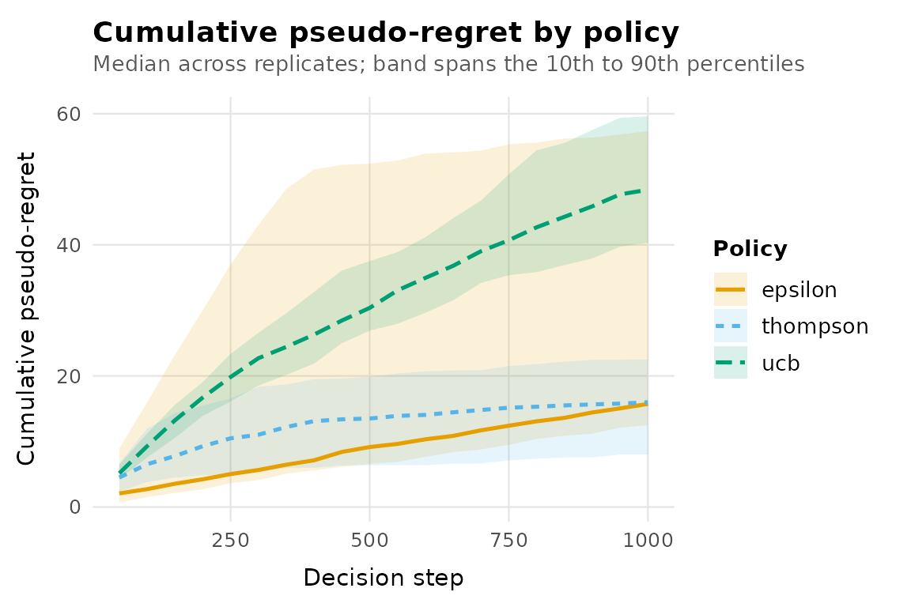
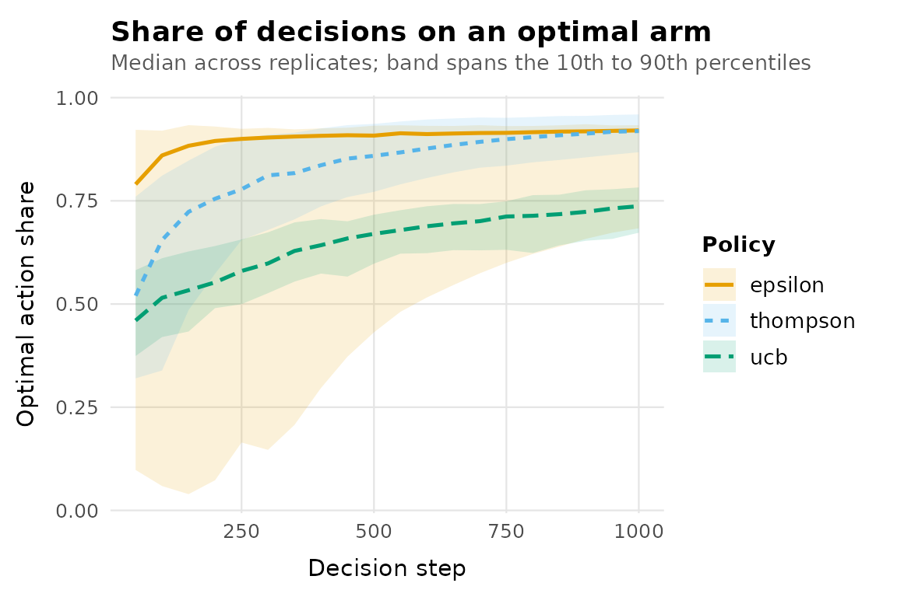

A multi-armed bandit problem is a repeated decision: at every step you choose one of several actions (arms), observe a reward only for the arm you chose, and try to earn as much as possible while still learning which arm is best. banditlab provides the three pieces every bandit experiment needs: an environment that generates rewards, policies that choose arms, and an engine that runs them together reproducibly.
1. Create an environment
An environment holds the true reward process. It is known to the simulation and hidden from every policy.
env <- bandit_bernoulli(c(low = 0.15, mid = 0.25, high = 0.40))
env
#> <bernoulli_environment> 3 arms: low, mid, high
#> expected rewards:
#> low mid high
#> 0.15 0.25 0.40
#> optimal arm(s): high2. Choose policies
Policy constructors store configuration only. They are independent of any environment, so the same policy object can run against many environments.
policies <- list(
epsilon = policy_epsilon_greedy(epsilon = 0.1),
ucb = policy_ucb1(),
thompson = policy_thompson()
)3. Run a replicated experiment
One run of a stochastic policy proves nothing, so the engine
replicates. The single seed controls everything: each
replicate gets its own independent random number stream, and every
policy faces replicate r from the same stream start, which
makes comparisons paired by construction.
result <- run_experiment(
env,
policies,
horizon = 1000,
replications = 50,
seed = 42,
checkpoints = seq(50, 1000, by = 50)
)
result
#> <bandit_result> 3 policies x 50 replicates x horizon 1000 (seed 42)
#> environment: bernoulli_environment (3 arms)
#> stored: summary + checkpoints
#> # A tibble: 3 × 8
#> policy replications mean_regret median_regret regret_q025 regret_q975
#> * <chr> <int> <dbl> <dbl> <dbl> <dbl>
#> 1 epsilon 50 25.9 15.7 11.9 111.
#> 2 ucb 50 49.1 48.4 38.3 66.2
#> 3 thompson 50 15.4 16.0 6.04 25.8
#> # ℹ 2 more variables: mean_reward <dbl>, mean_optimal_share <dbl>4. Analyse the results
summary() aggregates across replicates. The intervals
are Monte Carlo quantiles across simulated runs, not confidence
intervals for a real deployment.
summary(result)
#> # A tibble: 3 × 8
#> policy replications mean_regret median_regret regret_q025 regret_q975
#> * <chr> <int> <dbl> <dbl> <dbl> <dbl>
#> 1 epsilon 50 25.9 15.7 11.9 111.
#> 2 ucb 50 49.1 48.4 38.3 66.2
#> 3 thompson 50 15.4 16.0 6.04 25.8
#> # ℹ 2 more variables: mean_reward <dbl>, mean_optimal_share <dbl>The per-replicate table is an ordinary tibble, so any dplyr or ggplot2 workflow applies directly.
as_tibble(result)
#> # A tibble: 150 × 5
#> policy replicate total_reward cumulative_regret optimal_action_share
#> <chr> <int> <dbl> <dbl> <dbl>
#> 1 epsilon 1 374 13.6 0.931
#> 2 epsilon 2 352 50.9 0.784
#> 3 epsilon 3 417 13.8 0.931
#> 4 epsilon 4 382 15.2 0.925
#> 5 epsilon 5 411 15.8 0.92
#> 6 epsilon 6 399 16.7 0.917
#> 7 epsilon 7 371 18.9 0.908
#> 8 epsilon 8 377 16.3 0.918
#> 9 epsilon 9 386 15.1 0.924
#> 10 epsilon 10 369 15.6 0.921
#> # ℹ 140 more rows5. Plot
autoplot() draws the standard diagnostics. Plots are
plain ggplot objects; add your own theme or scales as usual.
autoplot(result, metric = "cumulative_regret")
autoplot(result, metric = "optimal_action_share")
6. Reproduce
Rerunning with the same seed gives identical results, replicate by replicate. Results also do not depend on how many replicates you run: replicate 7 of 50 equals replicate 7 of 500, because each replicate has its own stream.
again <- run_experiment(env, policies, horizon = 1000,
replications = 50, seed = 42,
checkpoints = seq(50, 1000, by = 50))
identical(summary(again), summary(result))
#> [1] TRUEWhere next
-
vignette("comparing-policies")covers paired comparisons and how to read regret. -
vignette("custom-policies")shows how to implement your own policy and run it in the same engine. -
?regret_definitionsstates the exact definitions of every metric.